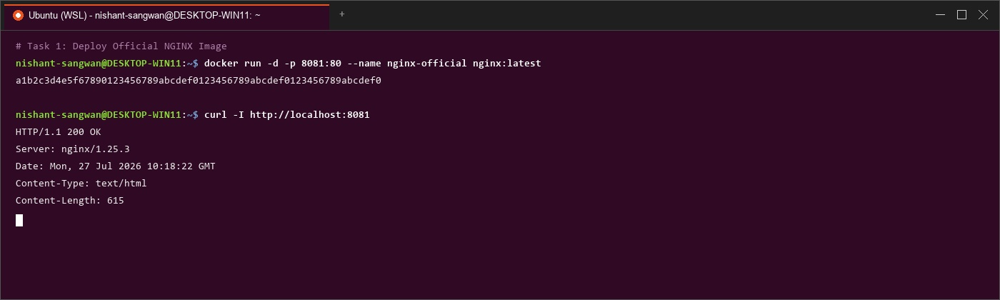
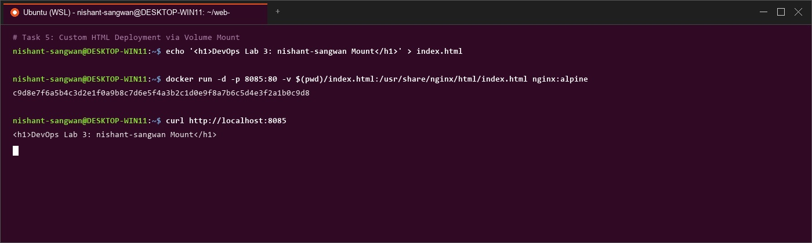

Part 2: Ubuntu Base Image

Deploying NGINX Using Different Base Images & Comparing Image Layers



| Variant | Size | Suitability |
|---|---|---|
| nginx-alpine | ~27.8 MB | Production / Kubernetes |
| nginx:latest | ~142 MB | Standard Hosting |
| nginx-ubuntu | ~228 MB | Debugging / Development |
